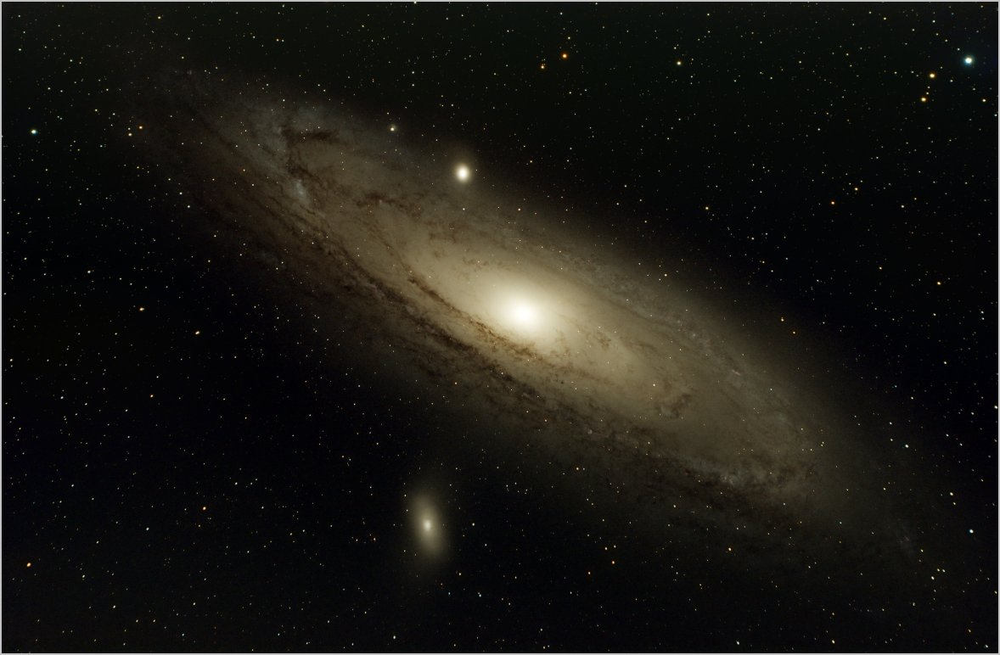
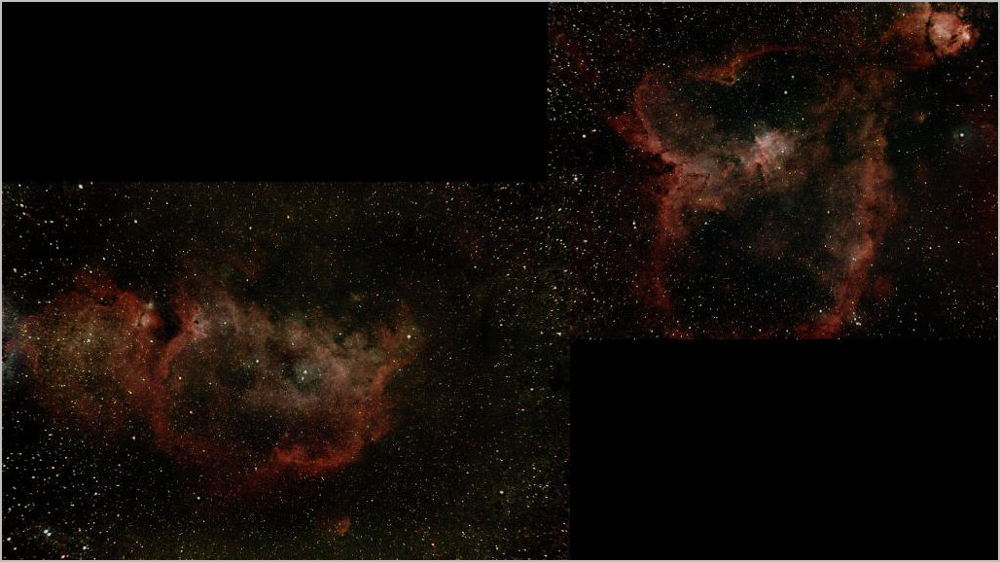
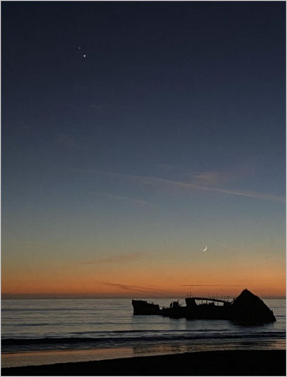
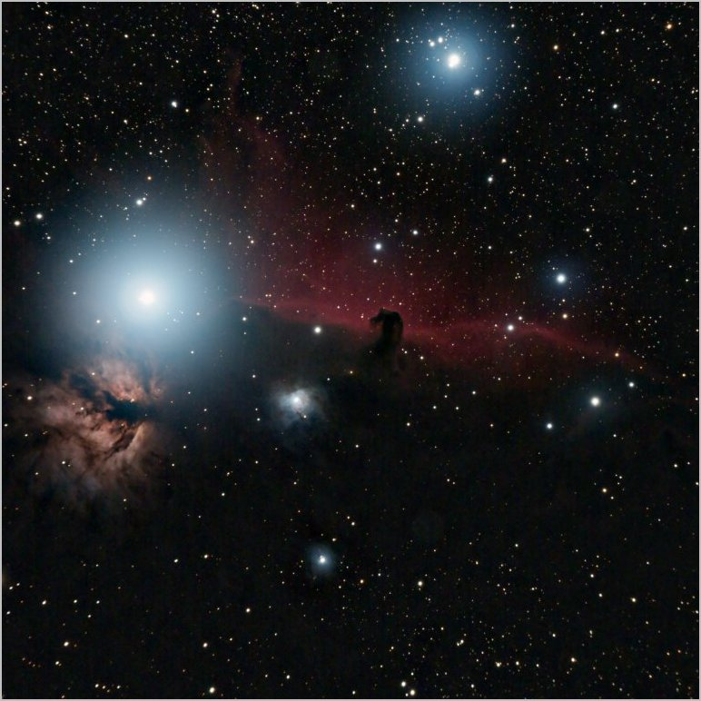
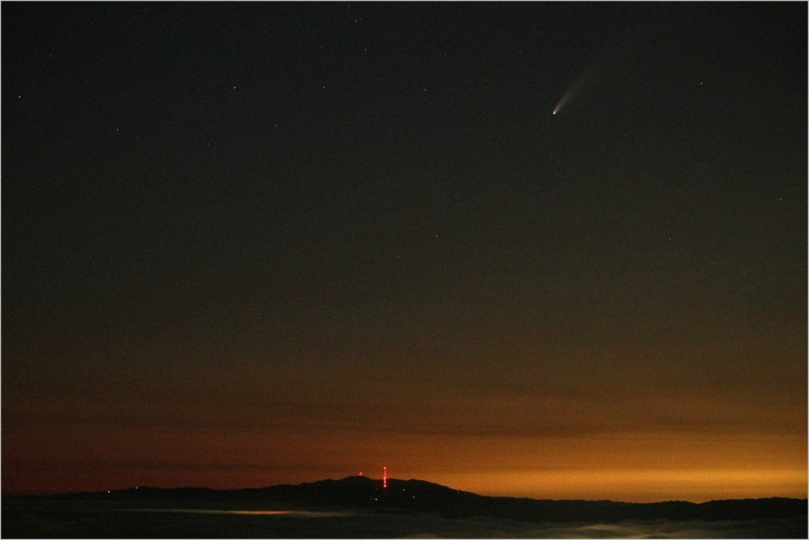

"We are just an advanced breed of monkeys on a minor planet of a very average star. But we understand the Universe. That makes us something very special." ~ Stephen Hawking.
Some of my favorite images from the last few years. Most are what's known as "Deep Sky Images", these objects generally appear quite large but very faint, which makes them impossible to see with the naked eye or a small telescope. Attaching a camera to the telescope and taking multiple long exposures is necessary.

The Andromeda Galaxy is a popular target and I have photographed it several times, I think this latest version is the best so far. The Andromeda Galaxy is very large, quite bright, and famously the most distant object visible to the naked eye at 2.5 million light years. If it were possible to see its full extent in the night sky it would appear about 6x larger than the moon.

This image is a mosaic of two images. Although the "Heart" (right) and "Soul" (left) nebulas appear close in the night sky they are too far apart to fit in one frame.

Photograph taken from Seacliffe Beach with the "Cement Boat" and the Moon.

Another well-known object. Named for the resemblance of the dark dust cloud to a horse's head. The very bright star is Alintak, the left-most star of the three stars of Orion's Belt.

Comet Neowise was visible to the naked eye during July 2020. This image was taken with a 55m lens from Fremont Peak CA.